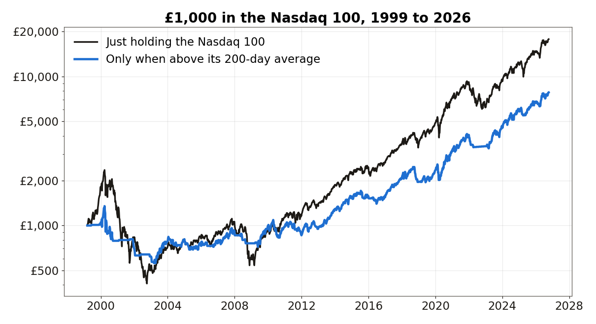
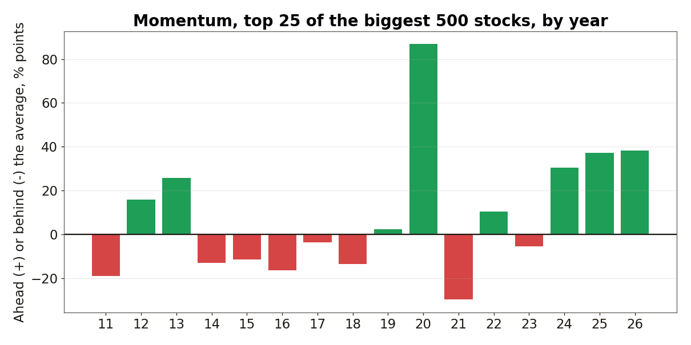
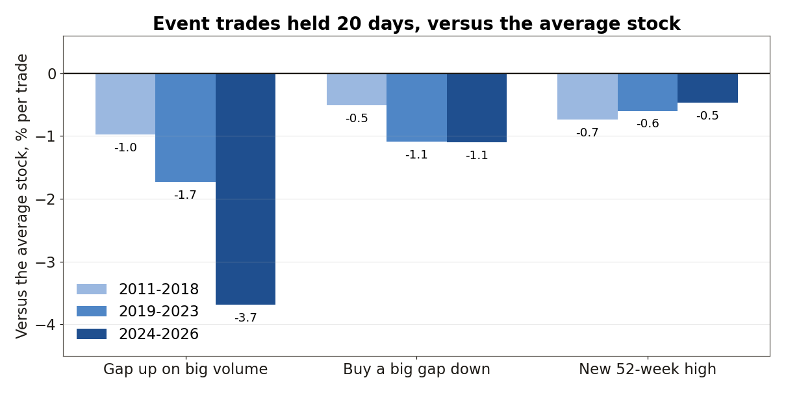
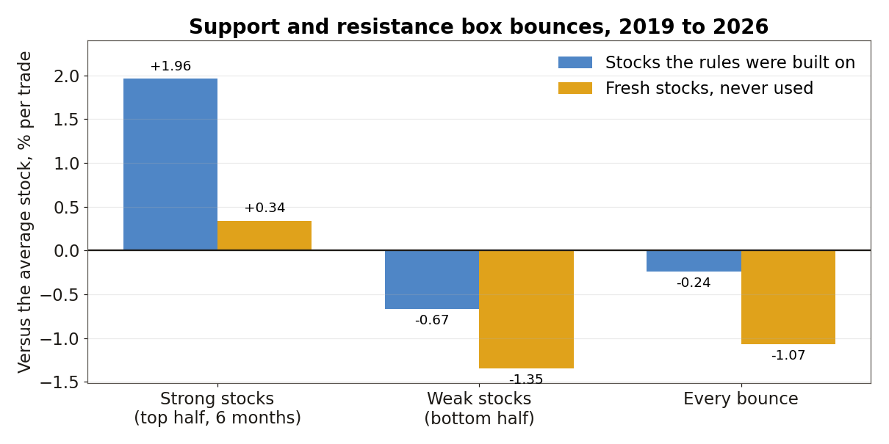

At home I built projects to push and test myself, and one of them is automating my stocks and shares trading. It runs on a demo account that started with a 50 pound seed fund, so it is a test, not proof of anything, and none of this is financial advice.
A rule that makes money is not the same as a rule that works. If the whole market rises and your rule rises less, you would have done better doing nothing clever at all. So every idea below is measured against the average US stock over exactly the same days, after a 0.4% cost on every trade.
You can try every variation yourself on the interactive version of this lab: garystow.co.uk/lab.
Step 1: Set the bar before you test anything
The lab compares each idea with the equal-weight average of all US stocks priced $5 or more that trade at least $5m a day. The price history covers about 7,000 US stocks from 2010 to 9 October 2026. I split the years into separate periods, because an idea that only works in one market is luck, not a method.
Idea 1: Only hold the Nasdaq 100 when it is rising
The simplest rule I know: hold the Nasdaq 100 while it is above its average price of the last 200 days, otherwise sit in cash.

From 1999 to 2026, just holding grew 10.9% a year but fell -83.0% at its worst. The 200-day rule grew 7.8% a year and its worst fall was -59.1%. From 2010 to 2017 holding made 17.8% a year against 9.6% for the rule. It is crash insurance, not extra profit: it gives up growth in rising markets and saves you in the big falls.
The bar every other idea has to clear is high. Simply holding the Nasdaq 100 made 20.5% a year from 2018 to 2026.
Idea 2: Buy last year's biggest winners
Momentum: each month, take the biggest 500 stocks, buy the 25 that rose most from 12 months ago to 1 month ago, and hold for a month.

From 2011 to 2018 it made -0.6% a year while the average big stock made 6.5%. From 2019 to 2026 it made 31.0% a year against 13.0%. Same rule, opposite results. Among all liquid stocks it lost in both periods. This is the most promising idea in the lab, and also the clearest example of why one good period proves nothing.
Ideas 3 to 5: Trade the big news days
Three ideas that sound obvious: buy a stock that opens 5% or more up on three times its normal volume, like an earnings beat; buy a stock that gaps down 5% or more on heavy volume, hoping it bounces; and buy a stock making a new 52-week high.

All three finished behind the average stock in every period. Buying the gap up was worst: -3.69% per trade against the average over 20 days in 2024 to 2026, across 2,637 trades. Across 5, 20 and 60-day holds, the only result above zero was gap-downs held 60 days in 2019 to 2023, at +0.07%. The news is priced in before you can act on it.
Idea 6: My own support and resistance boxes
This is how I read a chart: weekly candles over one to two years, a wide support box at the bottom and a wide resistance box at the top with a big gap between them, and I only want stocks that have already bounced. I coded that as closely as I could and tested it from 2019 to 2026, first on one set of stocks and then on 819 fresh stocks the rules had never seen.

Taking every bounce lost to the average stock in both sets. But one pattern held in both: bounces in stocks that were already strong over the last six months beat bounces in weak stocks, by 2.63 points a trade in the first set and 1.69 points in the fresh set. Strong stocks on their own were +0.34% in the fresh set, which is not enough to call it proven.
Idea 7: The model already trading my demo account
Mode 2 buys stocks bouncing off support. Across 470,158 signals from July 2024 to July 2026, held for 10 days, it finished -0.40% against the average stock, and no filter I tried lifted it above zero. Its support levels were found every 1.5% of price, far tighter than the boxes I draw by hand. That is the likely root cause, and the next thing I will fix before trusting it again.
What the lab caught in my own system
Two mistakes would have fooled me without these checks. The backtest behind my automated models read its RSI signal from the close of the day it was trading, while pretending to buy at the previous close, so it was peeking at the answer. With the honest reading, its RSI 60 filter added nothing. And about 900 of my price files only had history from June 2024, including the biggest US stocks, so earlier long tests were missing them. I filled 858 of them from free data and re-ran everything.
What I'm doing next
Backtests can only rule ideas out. Every weeknight my automation now records each box bounce, marked strong or weak, and scores it on real prices with no money involved. After about 40 finished trades the forward test will settle what the backtest could not. Momentum among the biggest stocks is next in line for the same treatment.
You can download the numbers behind every chart: trading lab results (CSV).
The code: the premarket scanner that builds my Game's daily shortlist is public on GitHub at GarySto/market-universe-generator ↗, and every test above is in the interactive Trading Research Lab.
Why compare with the average stock and not just profit?
Because a rule that made money while everything rose has not shown any skill. Comparing with the average stock over the same days removes the market's own move, so what is left is what the rule added.
Does a trend rule beat the market?
Not on growth. Holding the Nasdaq 100 only above its 200-day average gave up growth in rising markets, but its worst fall was -59.1% against -83.0% for just holding.
Is momentum investing worth it?
Among the biggest stocks it beat the average from 2019 to 2026 and lost from 2011 to 2018. Until it holds up going forward, I treat it as an idea to test, not a strategy.